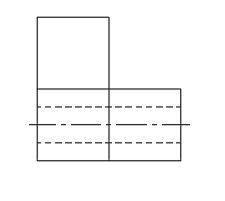

Learning Targets
- Identify the information contributed by the front, top, and right views.
- Transfer feature locations between views using projection lines.
- Reconstruct a missing view without inventing unsupported geometry.
Focus question: How do engineers keep multiple views of the same object organized and accurate?
Use this page with the lesson presentation and your engineering notebook.
The completed view matches the shape and feature locations shown by the source views.
Think first, then be ready to share a short response that connects the question to engineering communication.
Each source view contributes different information. Shared heights, widths, depths, and feature locations can be transferred to determine the missing projection.
The front, top, and right views describe the same object from different directions.
Projection lines transfer feature positions between related views.
A missing view must be derived from the existing geometry rather than guessed.
The two given drawings describe one object. Use them together to decide which candidate completes the orthographic set as the right-side view.


Transfer rule: The right-side view must keep the same heights as the front view and the same depths/features implied by the top view.
Use two provided orthographic views to infer and construct the missing front, top, or right view.
Quality check: Every edge in the completed view must be supported by information from at least one source view.
Submit the completed set and a short explanation of your reasoning.
Submission standard: Base every line on the source views and keep enough projection evidence to show how the missing view was constructed.
Use the lesson slides for guided practice, interactive checks, and the exit ticket.
Return to the IED course hub for units, resources, certifications, and current course information.